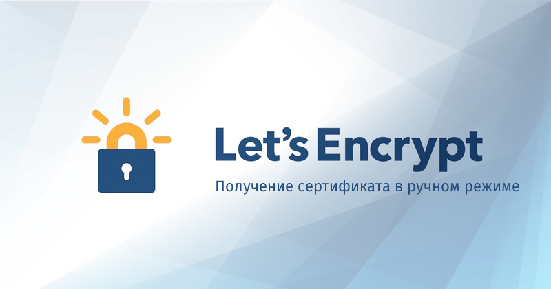
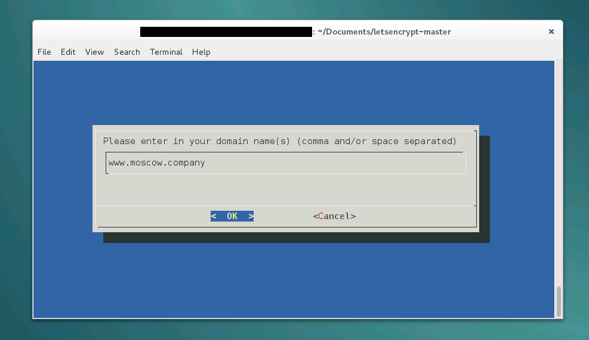
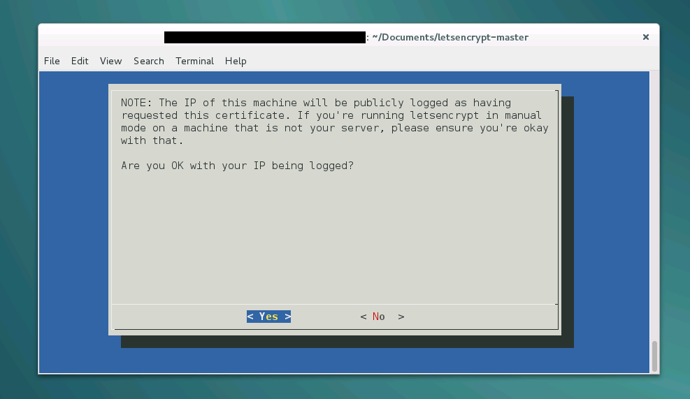
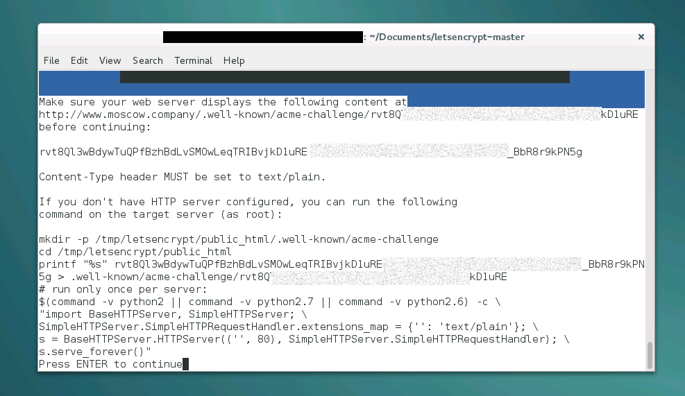
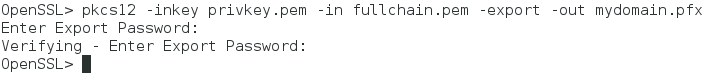

В данной статье будет описан реальный
способ получения сертификата от Let's
Encrypt в ручном режиме для его дальнейшей
установки на веб-сервер Windows (IIS/Microsoft
Azure) или Linux (полностью ручной режим).
Из-за отсутствия официального клиента
под Windows для генерации сертификата
будет использоваться дистрибутив
Linux.

В
первые дни открытия заявок на
бета-тестирование и было принято решение
записаться и вот недавно пришло письмо,
которое сообщает о том, что теперь
программа ACME сгенерирует валидный
сертификат для нашего домена.
Далее
мы решили опубликовать статью с пошаговой
инструкцией процесса, чтобы к моменту
релиза вы уже смогли оперативно создать
и начать пользоваться своим сертификатом.
Как это работает
Полное описание процесса
доступно по этой
ссылке.
Важно лишь знать, что для
подтверждения владения доменом и
успешной генерации сертификата нужно
будет иметь доступ к записям DNS или к
серверу куда ссылается A-запись, что
вполне логично.
Смысл программного
набора Automated
Certificate Management Environment (ACME) (написан на
Python) в том, чтобы автоматизировать
генерацию и установку сертификата в
Linux-окружении.
Существует
неофициальный Windows-клиент
с открытыми исходными кодами, который
может генерировать и устанавливать
сертификаты на Windows IIS и Amazon Web Services, но
у нас была задача получить ключи и
установить их вручную. Предлагаю любому
желающему написать статью по работе с
ним.
Процесс по шагам
Внимание: эта инструкция
учит создавать сертификат в ручном
режиме, существуют и более простые
способы автоматической генерации и
обновления сертификатов. Надеюсь, что
скоро их опишут на этом ресурсе.
[11/01/17]
Новый клиент CertBot
Небольшое
обновление статьи в 2017 году.
Теперь
можно установить CertBot и получить
сертификат в ручном режиме.
Краткая
инструкция:
1. Скачиванием
дистрибутив
wget
https://dl.eff.org/certbot-auto
2. Установка
прав на файл
chmod a+x certbot-auto
3.
Запуск для получения сертификата в
ручном режиме
./certbot-auto certonly
--authenticator manual
4. Следуйте
указаниям программы (подробнее смотрите
в полной инструкции ниже с шага №
4).
Подробная инструкция (старый
клиент — всё ещё работает)
Использовалась
официальная
инструкция.
Пользователи Linux могут
использовать текст ниже как пример
генерации сертификата в ручном
режиме.
1. Запустите ваш любимый
дистрибутив Linux (мы использовали Debian
8).
либо 2. Установите
Git и выполните команды ниже:
git
clone https://github.com/letsencrypt/letsencrypt
cd
letsencrypt
или 2. Скачайте и
распакуйте в папку данный
архив и перейдите в эту папку
3.
Запустите установку и генерацию с
помощью
./letsencrypt-auto
--agree-dev-preview --server
\https://acme-v01.api.letsencrypt.org/directory -a manual auth
Вам
будет предложено ввести электронную
почту для восстановления в будущем.
Ключ
-a manual позволит сгенерировать ключи в
ручном режиме без их автоматической
установки на веб-сервер.
4. Далее
введите домены для которых вы хотите
создать сертификаты

5.
Подтвердите сохранение вашего адреса
в логах Let's Encrypt

6.
Подтвердите владение доменом

В
сентябре 2016 года произошли небольшие
изменения в порядке получения сертификата.
Спасибо toxi_roman
за обновление.
Старый способ подтверждения с text/plain (не актуально по состоянию на октябрь 2016 г.)
Если у вас сервер на
Windows (с поддержкой Razor Views, аналогично и
с MVC), то самый простой способ создания
правильного ответа:
а) создать папку
.well-known и в ней папку acme-challenge
б)
поместить туда файл [запрос].cshtml
в)
в содержание этого файла
добавить:
@{Response.ContentType =
"text/plain";Response.Charset = "";}здесь
проверочный код
7. После
успешной проверки, будут созданы
следующие сертификаты в папке
/etc/letsencrypt/live/[имя домена]:
privkey.pem
— приватный ключ для сертификата
Используется
Apache для SSLCertificateKeyFile и nginx для
ssl_certificate_key.
cert.pem (сертификат
сервера)
Используется Apache для
SSLCertificateFile.
chain.pem (сертификат
цепочки)
Он же используется Apache для
SSLCertificateChainFile.
fullchain.pem (соединение
chain.pem и cert.pem)
Он же используется nginx
для ssl_certificate.
7. Теперь пришло
время сконвертировать его в родной для
Windows .pfx формат.
Перейдите в папку
/etc/letsencrypt/live/[имя домена] (откройте
терминал в режиме администратора с
помощью команды su):
cd
/etc/letsencrypt/live/[имя домена]
Запустите
OpenSSL с помощью команды:
openssl
и
начните конвертацию с помощью
команды:
pkcs12 -inkey privkey.pem -in
fullchain.pem -export -out mydomain.pfx
Вас
попросят ввести пароль и подтвердить
его.

7.2
Выходим из OpenSSL с помощью команды
quit
7.3 Копируем итоговый файл в
директорию нашего пользователя
cp
--no-preserve=all mydomain.pfx /home/(имя
пользователя)/Documents
8. Мы
получили сертификат mydomain.pfx, который
теперь можем использовать в
Windows-окружении.
Для обновления
сертификата в ручном режиме:
./letsencrypt-auto
certonly --renew-by-default -a manual
Важно
знать, что сертификаты Let's Encrypt валидны
90 дней. Рекомендуется обновлять их
каждые 60 дней. На электронную почту,
которую вы указали для генерации, будут
приходить уведомления об истечении
сертификата.
Буду рад услышать
ваши замечания или пожелания к статье.